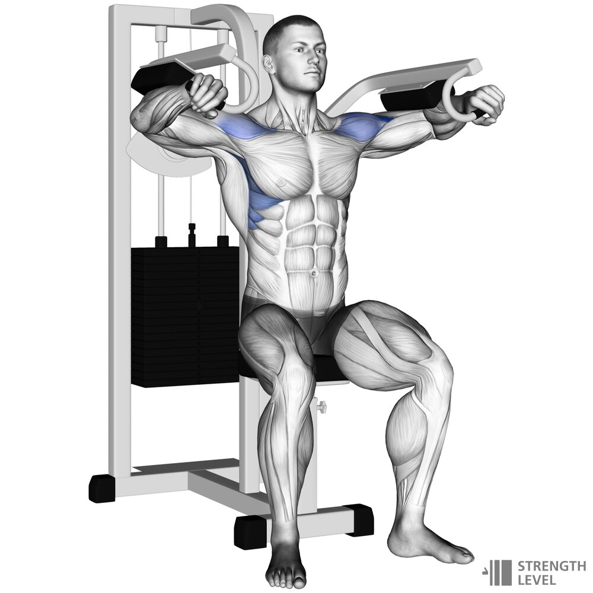
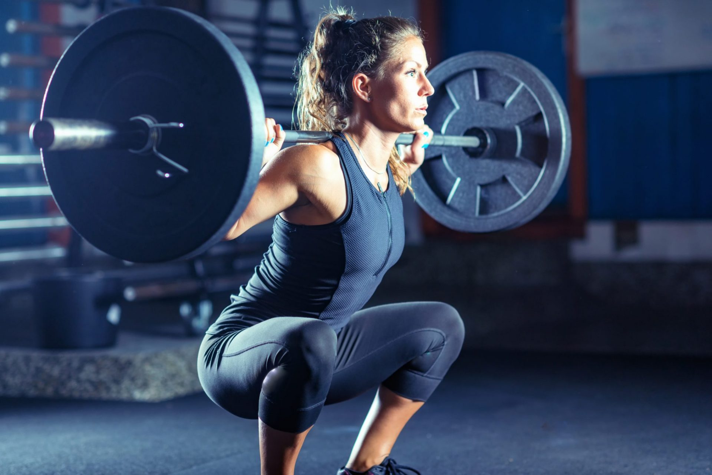

| Bagian yang dilatih |
Fungsi |
Foto latihan |
Variasi Gerakan |
| DADA |
Latihan dada seperti bench press, push-up, dan pec fly membantu Latihan dada seperti bench press, push-up, dan pec fly membantu
mengembangkan dan membentuk otot dada (pectoralis major). Hal ini dapat memberikan bentuk yang proporsional pada tubuh serta meningkatkan kekuatan dada. |
 |
Bench press
Push up
Pec fly
Chest press machine
Cable fly
Dips
Upper chest press
|
| PUNGGUNG |
Membangun Postur Tubuh yang Baik: Latihan punggung seperti pull-up, lat pulldown, dan barbell row membantu memperkuat
otot-otot punggung (terutama latissimus dorsi) yang mendukung postur tubuh yang baik. |
 |
Pull-up
Lat Pulldown
Barbel row
T bar row
Chin-up
Cable row
Single Cable row
|
| BAHU |
Meningkatkan Kestabilan Bahu: Latihan bahu yang tepat dapat meningkatkan kestabilan sendi bahu dan mengurangi risiko cedera,
terutama pada aktivitas yang melibatkan gerakan angkat atau dorong di atas kepala. |
 |
Shoulder Press machine
Shoulder Dumbbel press
Lateral raise
Face pull
Front raise
Surgh
Cable Lateral
|
| KAKI |
Membangun Kekuatan dan Daya Tahan: Latihan kaki seperti squat, deadlift, dan lunges membantu membangun kekuatan dan daya
tahan pada otot-otot kaki (quadriceps, hamstrings, dan glutes). |
 |
Squat
Deadlift
Leg press
Leg Extension
|